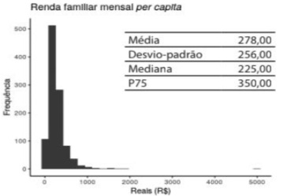
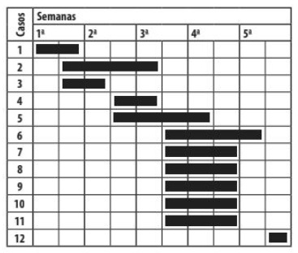
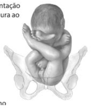
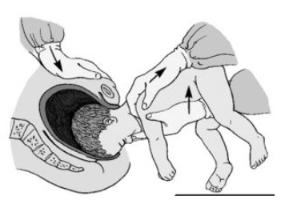
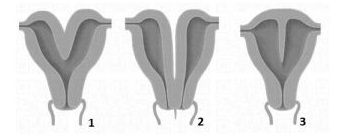

Questão 1 · HCVRNA · Interpretação dos marcadores sorológicos · AntiHCV · 4000126159Uma paciente feminina, 45 anos, procura a unidade básica de saúde, relatando preocupação em fazer o exame do HIV, pois descobriu que o seu ex-parceiro adoeceu. Você atende e acolhe a paciente, verifica seu histórico de saúde e queixas atuais e solicita alguns exames. Quando a paciente retorna, os resultados são os seguintes: anti-HIV não reagente, HBsAg não reagente, anti-HBc IgG não reagente, anti-HCV reagente, anti-HBs reagente e VDRL não reagente. Qual a sua interpretação e a próxima conduta?
A Hepatite B resolvida – tranquilizar a paciente.
B Hepatite B resolvida – solicitar reforço de vacina.
C Hepatite B em fase de resolução – observar evolução clínica.
D Hepatite C – encaminhar para iniciar tratamento.
E Hepatite C suspeita – solicitar exame confirmatório.
Questão 2 · Drogas antidiabéticas não insulina · 4000122797Assinale a alternativa correta sobre a terapêutica medicamentosa dos pacientes com diabetes mellitus do tipo 2.
A Em pacientes com insuficiência cardíaca, as gliptinas são preferidas aos demais antidiabéticos.
B Em pacientes com doença renal crônica estágio 3A, o uso de gliflozinas deve ser evitado devido ao aumento de risco de progressão da doença renal.
C Uma vez iniciada, a metformina deve ser mantida pelo período em que for tolerada e deve ser sempre suspensa quando introduzido o tratamento injetável não insulínico.
D Em pacientes que possuem doença aterosclerótica estabelecida, o uso de agonistas do GLP1 é recomendado pelo seu potencial benefício cardiovascular.
E Em pacientes obesos não catabólicos que necessitem intensificar o tratamento antidiabético com tratamento injetável, o uso de insulina é preferível aos agonistas do GLP1.
Questão 3 · Medidas de dispersão · 4000094317Sendo responsável por uma Área de Saúde da Família em que a renda familiar per capita mensal se distribua como mostram a figura e tabela abaixo. Nessa população, qual proporção de pessoas vive em famílias com renda familiar mensal per capita maior ou igual a R$ 350,00?

A 2,5%
B 25%
C 75%
D (Média + desvio-padrão)/100
E É impossível saber com a informação disponível.
Questão 4 · Processo saúdedoença · 4000094294Em relação aos determinantes sociais ou gerais do processo saúde-doença-atenção em uma coletividade determinada, é correto afirmar:
A Esses determinantes sociais e ambientais não têm se mostrado nas pesquisas mais importantes que os determinantes biológicos (genéticos etc).
B A epigenética vem mostrando que o ambiente social e físico-químico não tem tanta importância na saúde das pessoas quanto se supunha.
C As desigualdades econômicas têm grande impacto nos indicadores de saúde apenas para os muito pobres.
D A magnitude das desigualdades de renda é um desses determinantes, e sua redução é uma ação favorecedora da saúde.
E Os determinantes sociais são genéricos e não interferem diretamente no aparecimento de doença.
Questão 5 · Medidas de Desempenho de Testes Diagnósticos ou Medidas de Perf ormance de Testes Diagnósticos · 4000094283Quando se solicita um exame diagnóstico para um pessoa assintomática que não tem risco aumentado para a doença (se faz um rastreamento), a chance de um resultado falso-positivo é grande porque:
A Não interfere porque não há relação entre a prevalência e valores preditivos.
B O valor preditivo negativo é muito alto, o que torna a especificidade mais baixa e gera falso-positivos.
C O valor preditivo positivo nessa situação é alto, mas a sensibilidade é baixa e isso facilita falso-positivos.
D A especificidade e o valor preditivo são baixos e isso gera falso-positivos, mesmo com alta prevalência da doença.
E O valor preditivo positivo nessa situação é baixo, devido à baixa prevalência em geral das doenças.
Questão 6 · Diretrizes do rastreamento mamográf ico · 4000094274Cada vez mais se exigem transparência, clareza, objetividade e simplicidade sobre os benefícios e danos potenciais nas orientações profissionais e institucionais sobre os rastreamentos. Dentre as orientações a uma mulher de 51 anos que nunca fez rastreamento mamográ co e pergunta sobre ele, é correto orientar que:
A Para cada morte evitada por câncer de mama (benefício), cerca de 3 ou 4 mulheres são diagnosticadas e tratadas sem necessidade (dano), pois seu câncer não se manifestaria.
B O tratamento permitido pelo diagnóstico precoce salva vida (benefício) e os danos principais são os falso- positivos, que serão minimizados com o resultado da biópsia.
C O benefício é evitar mortes tratando precocemente o câncer se detectado e os danos principais são os falso- positivos e as biópsias desnecessárias, que porém são temporárias.
D O benefício é reduzir de 15 a 20% a mortalidade por esse câncer (de 5 para 4 mortas em mil mulheres, nos ensaios clínicos), e os danos principais são a dor do exame e os falso-positivos.
E O benefício é reduzir em 30% a mortalidade por esse câncer e os danos são: falso positivos, biópsias desnecessárias, sobrediagnósticos e aumento da mortalidade cardiovascular.
Revisar: possível letra faltando em enunciado
Questão 7 · Atenção Primária à Saúde APS no Brasil · Política Nacional de Atenção Básica PNAB · 4000094262Sobre os serviços de saúde da Atenção Primária à Saúde (APS), é correto afirmar:
A Esses serviços são uma das portas de entrada do Sistema Único de Saúde, porém não a preferencial.
B São responsáveis pela resolução de 100% dos problemas de saúde que ocorrem nas comunidades.
C São o primeiro contato (não emergencial) com o Sistema de Saúde, a cada novo problema em saúde.
D Como eles exercem função de filtro, não há prioridade para manutenção dos mesmos profissionais nas equipes de APS.
E São responsáveis pela prevenção e promoção da saúde em dimensão individual e comunitária, devendo encaminhar para os serviços especializados os doentes.
Questão 8 · Prevenção Quaternária · 4000094254Assinale a alternativa correta sobre os significados e tipos de atividades preventivas.
A Prevenção secundária ocorre na atenção primária, através de saneamento básico, acesso a educação escolar etc.
B Prevenção primária é definida como o tipo de ação preventiva realizada nos serviços da atenção primária à saúde.
C Prevenção terciária é aquela realizada nos ambulatórios especializados do Sistema Único de Saúde.
D As atividades de prevenção são as mesmas da promoção da saúde; as primeiras, individuais e as segundas, coletivas.
E Prevenção quaternária é evitar intervenções desnecessárias e proteger o paciente de ações hipermedicalizantes.
Questão 9 · Critérios de Bradf ordHill · 4000094244Nos últimos anos o Brasil tem vivido instabilidades e transformações políticas, econômicas e sociais. Observamos, também, nos anos mais recentes, a piora de indicadores de saúde que vinham melhorando consistentemente. São exemplos das a rmações anteriores os eventos de 2016, impeachment em agosto e o congelamento dos gastos em saúde em dezembro e a piora de indicadores como a Mortalidade Infantil e a Mortalidade Materna em 2017 e 2018. A inferência causal é um processo complexo, e para facilitar esse debate, Sir Bradford Hill propôs uma série de argumentos que foram posteriormente conhecidos, na epidemiologia, como “os critérios de Hill”. Os eventos citados acima respondem ao principal “critério de Hill”, sem o qual um evento não pode ser considerado causa de outro, que é:
A analogia.
B temporalidade.
C plausibilidade biológica.
D efeito dose-resposta.
E consistência.
Questão 10 · Desviopadrão · 4000094239Sendo responsável por uma Área de Saúde da Família cuja população tem um Índice de Massa Corporal (IMC) médio de 22 kg/h² , com desvio-padrão de 2 kg/h² , com distribuição nessa população de forma normal, isto é, seguindo a “curva de Gauss”. Qual a probabilidade de que uma pessoa qualquer dessa população tenha um IMC maior que 26 kg/h²?
A 2,5%
B 5%
C 22%
D 25%
E 50%
Questão 11 · Estratégia de observação longitudinal x transversal · 4000094227Se um pesquisador pretende estudar hipertensão entre adultos jovens, e pretende associar a ocorrência dessa doença em relação à obesidade, o tipo de estudo deverá ser:
A transversal, pois a relação exposição-ocorrência não é importante nessa situação.
B longitudinal prospectivo, pois apenas essa opção identifica o que é exposição e o que é ocorrência.
C ecológico, eliminando a importância da exposição em relação à ocorrência.
D longitudinal, para identificar se a exposição precede a ocorrência.
E ensaio clínico randomizado, pois estudos observacionais não avaliam essa relação.
Questão 12 · Tipos de Estudos Epidemiológicos · 4000094219Em exames periódicos de início de ano, dois grupos de funcionários de uma siderúrgica foram submetidos a exames clínicos e laboratoriais, sendo constatados diversos casos de leucopenia. Entre os trabalhadores do setor de metalurgia a prevalência encontrada foi 9 vezes maior que entre os trabalhadores do setor administrativo. Trata-se de um estudo: A) transversal. B) de caso-controle. C) de coorte, retrospectivo. D) de coorte, prospectivo. E) ecológico.
A transversal.
B de caso-controle.
C de coorte, retrospectivo.
D de coorte, prospectivo.
E ecológico.
Questão 13 · Transição Epidemiológica no Brasil · 4000094203A característica que diferencia a transição epidemiológica no Brasil de outros países é:
A em seu ciclo atual, explica o elevado número de mortes por causas externas.
B a superposição de alguns problemas, como aumento das mortes por doenças crônico- degenerativas e persistência de mortes por doenças infecciosas.
C o predomínio de mortes por doenças crônico-degenerativas com a mesma proporção dos países mais ricos.
D as elevadas mortes por doenças infecciosas e, consequentemente, expectativa de vida mais baixa, como os países mais pobres.
E tem uma polarização geográfica clara, mas um equilíbrio socioeconômico definido por nosso modelo de saúde pública.
Questão 14 · Medidas de Desempenho de Testes Diagnósticos ou Medidas de Perf ormance de Testes Diagnósticos · 4000094191Se você suspeita de uma doença grave em um paciente, e quer trabalhar com o máximo grau de con ança que esse paciente não tem a doença, que tipo de exame diagnóstico você deve preferir?
A Com baixa sensibilidade, para evitar um diagnóstico falso-positivo.
B Com alta especificidade, porque evita os falso-positivos.
C Com alta acurácia, independentemente do nível de sensibilidade.
D Com alta especificidade, uma vez que dificilmente deixará de diagnosticar os casos negativos.
E Com alta sensibilidade, uma vez que dificilmente deixará de diagnosticar os casos positivos.
Questão 15 · Incidência · 4000094179A figura abaixo se refere ao início e término de 12 episódios de uma doença infecciosa aguda, ocorridos ao longo de 5 semanas, em um asilo que abriga 160 idosos. Cada linha demarca um paciente. A alternativa que descreve corretamente o comportamento da incidência da doença é:

A 3, 2 e 6 casos na 1ª, 2ª e 3ª semanas.
B 3, 4 e 9 casos na 1ª, 2ª e 3ª semanas.
C Incidência menor na primeira semana.
D Incidência menor na segunda semana.
E Incidências menores na primeira e na última semana.
Questão 16 · Testes estatísticos · 4000094146O tipo de variável e a forma de sua distribuição são características importantes para:
A A definição do tamanho de amostra a ser empregado na pesquisa.
B A escolha do teste estatístico mais adequado no caso em estudo.
C Determinar a amplitude dos intervalos de confiança.
D Calcular a medida de efeito que liga a exposição ao desfecho de saúde.
E Estimar o valor preditivo positivo para um teste diagnóstico.
Questão 17 · Sistemas de Saúde e Modelos Assistenciais de Saúde · 4000094132Há uma tipologia internacional de sistemas de saúde que os classifica em: bismarkianos, beveridgeanos e smithianos (ou baseados no mercado). É correto afirmar que o sistema de saúde do Brasil:
A É beveridgeano na lei, mas na prática tem aspectos smithianos, como a maioria do gasto total em saúde do país é gasto privado.
B É na realidade beveridgeano, pois a grande maioria da população usa os serviços públicos do SUS, estatais e de administração direta ou por Organizações Sociais (OSs).
C É beveridgeano na lei, mas na realidade é bismarckiano, pois o financiamento tripartite dos planos de saúde é uma realidade na maioria desses planos.
D é beveridgeano na lei, mas na realidade é mais smithiano, pois o SUS e os recursos públicos são dedicados a atender apenas os mais pobres.
E O SUS, por sua peculiaridade, não se enquadra em nenhum desses modelos.
Questão 18 · Políticas de Saúde do Sistema Único de Saúde · 4000094113Assinale a alternativa correta com relação ao conceito de políticas públicas.
A Políticas Públicas são opiniões diversas daqueles que ocupam cargos de poder e que têm capacidade de executar.
B Políticas Públicas são ações desconexas que têm por fim interesses cambiáveis visando objetivos humanísticos e de inclusão social.
C Políticas Públicas são ações de governo que visam a redução de desigualdades e a melhoria da qualidade de vida dos grupos-alvo das ações.
D Políticas Públicas são conjuntos de objetivos, traduzidos em ações, que conformam determinado programa de ação governamental e orientam sua execução.
E Políticas Públicas são técnicas de intervenção na população que podem ou não possuir uma orientação única ou um conjunto de interesses conflitantes.
Questão 19 · Introdução à Epidemiologia · 4000094092A epidemiologia está fundamentada em aspectos inter-relacionados, mas distintos, acerca de problemas de saúde em populações. Assinale a alternativa que contém esses aspectos corretamente.
A Anamnese, diagnóstico e tratamento de problemas de saúde populacionais.
B Magnitude, desigualdade e terapêutica de problemas de saúde em populações.
C Frequência, distribuição e determinantes de problemas de saúde em populações.
D Vulnerabilidade, transcendência e etiologia de problemas de saúde populacionais.
E Controle, prevenção e transmissão de problemas de saúde em populações.
Questão 20 · Sistemas de Saúde e Modelos Assistenciais de Saúde · 4000094069As práticas de saúde desenvolvem-se em diversos níveis, que vão desde o cuidado individual, até os sistemas mais amplos. É correto afirmar que:
A O cuidado individual envolve a relação profissional/usuário e os sistemas mais amplos referem-se aos sistemas distritais, municipais, estaduais e nacionais de saúde.
B O cuidado individual envolve todas as práticas, pois sempre haverá indivíduos envolvidos e os sistemas mais amplos referem-se à comunidade, podendo ser o bairro, a localidade, a escola ou outro grupamento em análise.
C Os sistemas mais amplos referem-se a sistemas de saúde de ampla cobertura reconhecidos pelo mundo, assim como em Cuba, no Canadá, no Reino Unido.
D O cuidado individual remete ao cuidado que a unidade de saúde produz para cada pessoa, mas inclui também as práticas de autocuidado individual.
E O cuidado individual envolve todas as práticas, pois sempre haverá indivíduos envolvidos nas práticas de saúde e os sistemas mais amplos referem-se a sistemas de saúde de ampla cobertura reconhecidos pelo mundo, assim como em Cuba, no Canadá, no Reino Unido.
Questão 21 · Estudos de CasoControle · 4000094054Em relação aos estudos do tipo caso-controle, é correto afirmar que: A) Na sua origem envolvem a seleção de um grupo de indivíduos que tem o fator de risco de interesse e outro que não pode ter o fator. B) São considerados e cientes por permitirem a identi cação de fatores de risco para determinadas doenças com um número relativamente menor de participantes. C) Devem ser a última opção metodológica quando se trata de investigar causas de problemas de saúde, visto que são caros e demorados para se conduzir. D) Em geral, têm sua eficiência máxima atingida quando são selecionados quatro casos para cada controle. E) Podem ser aninhados a estudos transversais, mas, por motivos operacionais, não podem ser acoplados a estudos de coorte ou longitudinais.
A Na sua origem envolvem a seleção de um grupo de indivíduos que tem o fator de risco de interesse e outro que não pode ter o fator.
B São considerados eficientes por permitirem a identificação de fatores de risco para determinadas doenças com um número relativamente menor de participantes.
C Devem ser a última opção metodológica quando se trata de investigar causas de problemas de saúde, visto que são caros e demorados para se conduzir.
D Em geral, têm sua eficiência máxima atingida quando são selecionados quatro casos para cada controle.
E Podem ser aninhados a estudos transversais, mas, por motivos operacionais, não podem ser acoplados a estudos de coorte ou longitudinais.
Revisar: possível letra faltando em enunciado
Questão 22 · Princípios de Estatística Bioestatística ou Estatística Médica · 4000094038Assinale a alternativa que expressa a correta diferença entre os conceitos de “amostragem” e “amostra”.
A Amostra envolve o sorteio de sujeitos para uma investigação, ao passo que amostragem reflete o quanto um conjunto de indivíduos representa uma população.
B Amostra e amostragem são termos que se referem à mesma ideia (total de participantes do estudo), podendo ser utilizados de modo intercambiável.
C A amostragem é a triagem de indivíduos para um estudo de modo probabilístico e, por sua vez, amostra é a população de onde os indivíduos foram selecionados.
D Se, por um lado, amostragem implica incluir indivíduos num estudo de modo não probabilístico, por outro, amostra é sempre retirada aleatoriamente da população.
E Enquanto a amostragem corresponde à seleção de indivíduos para participar de um estudo, a amostra se refere aos participantes de uma pesquisa.
Questão 23 · Diagnósticos dif erenciais · Agentes etiológicos · Aspectos Clínicos Quadro clínico · 4000094016Considere um pré-escolar de 4 anos com quadro de osteoartrite de joelho. Há dois dias apresenta febre alta 39.7°C, dispneia e gemência. No exame clínico percebe-se hipoventilação em região posterior de hemitórax direito. O Rx mostrou consolidação, derrame pleural e pneumatocele. O diagnóstico mais provável é:
A Pneumonia Viral.
B Pneumonia por Clamídia.
C Pneumonia por Estafilococo.
D Pneumonia por Micoplasma.
E Pneumonia por Pneumococo.
Questão 24 · Síndrome de Lise Tumoral SLT · Síndrome de Lise Tumoral · Síndrome de veia cava superior · 4000094001O sucesso do tratamento das doenças oncológicas depende não somente da terapêutica especí ca, mas também do diagnóstico precoce e do adequado atendimento das situações de emergência/urgência. Em relação às emergências/urgências oncológicas, é correto afirmar:
A A mais comum causa primária da síndrome da veia cava superior e síndrome mediastinal superior na faixa etária pediátrica são as infecciosas, principalmente quando houver efusão pleural e pericárdica.
B A hiperleucocitose é definida pela presença de leucócitos no sangue periférico em número superior a 100.000/mm3. Está prontamente indicada nesses pacientes a transfusão de glóbulos vermelhos para corrigir a anemia.
C Na síndrome de veia cava superior secundária a doença neoplásica está indicada, com urgência, a sedação ou anestesia geral para biópsia da massa tumoral em mediastino.
D A síndrome de lise tumoral consiste de anormalidades metabólicas resultantes da morte das células tumorais e da liberação de seu conteúdo na circulação. A tríade clássica inclui hiperuricemia, hiperfosfatemia e hipercalemia.
E Na síndrome de lise tumoral, quando as intervenções medicamentosas falham para correção dos distúrbios metabólicos, ou a oligúria persiste, está indicada preferencialmente a diálise peritoneal.
Revisar: possível letra faltando em enunciado
Questão 25 · Hematologia · 4000093987Considere uma adolescente de 12 anos de idade, sexo feminino, com história de lipotimia de rápida duração e tosse seca persistente há 30 dias. A mãe relatou ainda que a adolescente apresentava astenia moderada e diminuição do apetite há 20 dias. Exame físico: palidez cutânea e em mucosa, emagrecida, FR: 36 rpm, FC: 80 bpm; PA: 110×60 mmHg, turgência de jugulares, fígado e baço impalpáveis. Radiogra a de tórax: massa mediastinal estendendo-se para hemitórax superior direito e comprimindo a carina. Qual sua principal hipótese diagnóstica?
A Neuroblastoma
B Higroma cístico
C Bócio mergulhante
D Carcinoma de tireoide
E Linfoma não Hodgkin
Questão 26 · Quadro Clínico · Herniações Cerebrais · Descompensação da Hipertensão Intracraniana · 4000093967Um pré-escolar, 4 anos de idade, sexo masculino é levado ao pronto-socorro com história de cefaleia recorrente, vômitos e alteração do comportamento, caracterizada por irritabilidade há cerca de 20 dias. No exame físico, o paciente é pouco cooperativo, FC: 60 bpm, PA: 140×90 mmHg. A hipótese diagnóstica mais provável é:
A Meningite.
B Enxaqueca.
C Tumor cerebral.
D Cefaleia tensional.
E Déficit de atenção/hiperatividade.
Questão 27 · PréRequisitos · Exame Clínico · 4000093951Assinale os pares cranianos que não podem ser examinados em uma criança com suspeita de morte encefálica:
A I, XI, XII
B II, IX, X
C III, VI, VIII
D III, V, XI
E VI, VII, VIII
Questão 28 · Prof ilaxia Vitamina D · 4000093925Dr. Mauro, pediatra em uma consulta de puericultura (7 dias de vida), orienta os pais João e Márcia, sobre a saúde óssea de seu lho Guilherme, enfatizando a importância da exposição solar, e da terapia com vitamina D. A dose preconizada de vitamina D em pediatria, o inicio da introdução e sua manutenção para promoção da saúde óssea é de _____________UI para crianças até_____________ meses, e após essa idade, até, UI, com início ____________de vida. Assinale a alternativa que completa corretamente as lacunas do texto.
A 200 • 12 • 36 meses • 400• na quarta semana
B 200 • 12 • 24 meses • 400 • na primeira semana
C 400 • 12 • 24 meses • 600 • na primeira semana
D 400 • 24 • o estirão da adolescência • 200 • no terceiro mês
E 600 • 12 • a adolescência • 800 • no sexto mês
Questão 29 · Reanimação neonatal · Passos iniciais · Reanimação neonatal em maiores de 34 semanas · 4000093904Uma criança ao nascer apresenta-se em apneia e hipotônica. O pré-natal e o parto transcorreram sem anormalidades e a ultrassonogra a morfológica não identi cou alterações fetais. Foi indicada imediata reanimação ao recém-nascido, os passos iniciais foram realizados e seguidos de adequada técnica de ventilação com balão e máscara facial em ar ambiente. Após, o bebê persistia sem ventilação espontânea e frequência cardíaca de 70 bpm. Assinale a alternativa que apresenta a conduta correta.
A Obter acesso venoso e administrar adrenalina.
B Suplementar oxigênio à ventilação com balão e máscara.
C Iniciar massagem cardíaca sincronizada à ventilação.
D Aspirar vias aéreas superiores e ajustar a posição do pescoço.
E Intubação traqueal e ventilar com pressão positiva.
Questão 30 · Hipoglicemia · Distúrbios da glicose · Distúrbios metabólicos do período neonatal · 4000093885Um recém-nascido, de mãe diabética, com 3 horas de vida, mostra-se ativo, com boa sucção no seio materno, eupneico, pletórico. A mãe refere ainda não ter leite, apenas colostro. O resultado da glicemia foi 50. A conduta mais apropriada é:
A infusão venosa rápida de solução de glicose a 10%.
B manter aleitamento materno e controle dos níveis de glicose.
C manter controle dos níveis de glicose e prescrever medicação para acelerar a apojadura.
D oferecer solução glicosada por via oral e manter aleitamento materno e controle dos níveis de glicose.
E manter controle dos níveis de glicose e oferecer complementação com fórmula infantil a cada 3 horas até que a mãe tenha leite.
Questão 31 · Síndrome nef rótica · 4000093865Em relação à Síndrome Nefrótica Idiopática da infância, é correto afirmar que:
A A maioria dos casos ocorre com lesões glomerulares específicas relacionadas com alguma patologia de base.
B A Síndrome Nefrótica chamada “lesão mínima” apresenta relação íntima com infecção estreptocócica.
C Na eletroforese de proteína observam-se, frequentemente, hipoalbuminemia e hipergamaglobulinemia.
D À microscopia óptica observam-se apenas anormalidades histológicas mínimas.
E Por definição cursa com proteinúria maciça (> 50 mg/kg/dia) e hipocolesterolemia.
Questão 32 · Teste do pezinho · 4000093847Qual a idade ideal para coleta de sangue para a triagem neonatal do hipotireoidismo congênito?
A nas primeiras 24 horas de vida
B entre o 3º e o 5º dia de vida
C após a primeira semana de vida
D após o primeiro mês de vida
E após 14º dia de vida
Questão 33 · Traço f alcêmico · Herança genética das hemoglobinopatias S · 4000093822Pais procuram o serviço de emergência de hospital pediátrico, com seu lho de 20 dias de vida, porque caram muito preocupados com o resultado do teste do pezinho que identificou a presença de Hb FAS. Qual sua hipótese diagnóstica?
A Anemia falciforme
B Traço falciforme
C S/ß
D S/ß⁰ talassemia
E Hb S associada a persistência hereditária da Hb fetal
Questão 34 · Etiologia · 4000093807Considere uma paciente de 13 anos de idade, sexo feminino, com história de epistaxe recorrente e prolongada não relacionado a trauma e menorragia significativa desde a menarca. Qual sua principal hipótese diagnóstica?
A Hemofilia A
B Hemofila B
C Doença de Von Willebrand
D Púrpura de Henoch-Schönlein
E Trombocitopenia imune primária
Questão 35 · Glomerulonef rite pósestreptocócica · Nef rologia · 4000093793Um escolar, 8 anos, trazido pela mãe à emergência devido a urina cor marrom e inchaço nos olhos. Há 8 dias iniciou edema periorbitário súbito bilateral matutino, evoluindo com dor abdominal difusa, oligúria e hematúria macroscópica. Nega episódios anteriores. Relata uso de amoxicilina devido a faringoamigdalite há 15 dias. Ao exame físico: Tax: 37,7°C, PA: 130×80 mmHg (p90 112×73 mmHg), hipertro a e hiperemia de amigdalas (Brodsky grau 3), edema de região orbital bilateral, parede abdominal, suprapúbica, escrotal, pré-tibial. Ganho de 5 kg de peso em 10 dias. Com base na história clínica e exame físico, a sua principal hipótese diagnóstica é:
A Colestase.
B Síndrome nefrótica.
C Doença de Kawasaki.
D Glomerulonefrite difusa aguda.
E Reação anafilactoide ao antibiótico.
Questão 36 · Hipertireoidismo primário · 4000093769Quanto ao hipertireoidismo na infância, a primeira opção de tratamento é:
A Levotiroxina.
B Metimazol.
C Propiltiuracil.
D Tireoidectomia.
E Rádio iodo (I131).
Questão 37 · Prof ilaxia Ferro · 4000093748Uma lactente de 7 meses, sexo feminino, é trazida à consulta de rotina. Gemelar, prematura, peso ao nascimento 1.250 gramas, em uso de quatro mamadeira de leite de vaca desde 3 meses de vida. Pais vegetarianos. Exame físico normal para a faixa etária. Considerando que a lactente apresenta fatores de risco para anemia ferropriva e a suplementação pro lática de ferro elementar, a conduta é:
A Iniciar 1 mg de Ferro elementar/kg peso/dia.
B Iniciar 2 mg de Ferro elementar/kg peso/dia.
C Iniciar 3 mg de Ferro elementar/kg peso/dia.
D Iniciar 4 mg de Ferro elementar/kg peso/dia.
E Não iniciar suplementação profilática de ferro via oral.
Questão 38 · Diagnóstico · 4000093713O responsável por um pré-escolar de 4 anos, masculino, invade a sala de emergência devido ao fato de seu lho não conseguir respirar. Relata que o lho iniciou há dois dias com febre baixa, coriza e tosse seca. No dia anterior, evoluiu para tosse ladrante, rouquidão, estridor inspiratório, di culdade para respirar, e tax 40°C. Hoje piorou muito. Ao exame físico, o paciente apresentava estridor inspiratório e expiratório em repouso, tiragem subcostal e fúrcula, cianose labial e sonolência. Orofaringe sem alteração. Ausência de sibilos estertores. Foi realizada nebulização com adrenalina e dexametasona com piora do quadro. A principal hipótese diagnóstica é:
A Crupe viral.
B Crupe espasmódico.
C Traqueíte bacteriana.
D Abscesso retrofaríngeo.
E Pneumonia bacteriana.
Questão 39 · 6 meses · 4000093691Uma lactente de 6 meses, sexo feminino, é trazida pela mãe à consulta de puericultura com queixa de atraso do desenvolvimento. A mãe relata que a lha senta-se projetando para frente e apoiando nas mãos, brinca com os pés e emite sons consonantais. Porém, não engatinha, e não faz gestos com a mão e a cabeça (“tchau”, “não bate palmas”). Baseado na sua hipótese diagnóstica, a melhor conduta é:
A Tranquilizar a mãe.
B Encaminhar à fisioterapia.
C Encaminhar ao neuropediatra.
D Investigar erro inato do metabolismo.
E Investigar maus tratos.
Questão 40 · Tratamento · Diagnóstico laboratorial · 4000093670Uma pré-escolar de 3 anos, feminino, previamente hígida, dá entrada na emergência com queixa de febre alta (39,5°C), vômitos e recusa alimentar há 2 dias. A paciente não apresenta controle es ncteriano e mãe relata que troca fralda menos vezes devido à diminuição de diurese. Ao exame físico mostra-se irritada, descorada (1+/4+), tax 39°C, hiperemia perineal e dor a palpação abdominal. Fralda com odor fétido. Solicitado parcial de urina por saco coletor com presença de intensa flora bacteriana. Neste caso, a conduta é:
A Iniciar Antibioticoterapia via oral e orientar retorno em 48 horas se a febre persistir.
B Iniciar Antibioticoterapia venosa após coleta de parcial de urina e urocultura por saco coletor.
C Iniciar Antibioticoterapia via oral após coleta parcial de urina e urocultura por saco coletor.
D Iniciar Antibioticoterapia venosa após coleta de parcial de urina e urocultura por cateterismo vesical.
E Iniciar Antibioticoterapia via intramuscular por 3 dias e orientar retorno em 48 horas se a febre persistir.
Questão 41 · Vacinas · Esquema vacinal · Calendários vacinais · 4000093649Um lactente de 16 meses, masculino, é levado por sua mãe à Unidade Básica de Saúde para atualização vacinal de acordo com o Programa Nacional de Imunização. O médico verifica que todas as vacinas foram realizadas, exceto as recomendadas para os 15 meses. As vacinas a serem realizadas neste momento são:
A Vacina inativada poliomielite, Difteria, Tétano, Coqueluche, Hepatite A, Haemophilus influenzae, Meningocócica C.
B Vacina oral poliomielite, Difteria, Tétano, Coqueluche, Hepatite B, Sarampo, Caxumba, Rubéola, Varicela.
C Vacina oral poliomielite, Difteria, Tétano, Coqueluche, Hepatite A, Sarampo, Caxumba, Rubéola, Varicela.
D Vacina inativada poliomielite, Difteria, Tétano, Coqueluche, Hepatite B, Haemophilus influenzae, Pneumocócica 10 valente.
E Vacina oral poliomielite, Difteria, Tétano, Coqueluche, Hepatite C, Sarampo, Caxumba, Rubéola, Meningocócica C.
Questão 42 · Apresentação clínica · Tratamento nas crianças e adolescentes · 4000093628Um pré-escolar de 5 anos, masculino, vem ao serviço de emergência trazido pela tia devido ao estado de confusão progressiva. A tia relata emagrecimento importante, fadiga, incontinência urinária e polidipsia nas últimas semanas. Ao exame físico, tax 39,1°C, FC 180 bpm, PA 80/50 mmHg, redução do turgor cutâneo, enchimento capilar 5 segundos e respiração de Kussmaul. Baseado na principal hipótese diagnóstica, o tratamento é:
A Cirurgia.
B Insulina.
C Desmopressina.
D Quimioterapia.
E Soro glicosado.
Questão 43 · Assistência ao parto na gestação multipla · 4000093606Assinale a alternativa correta sobre a gestação gemelar monocoriônica e diamniótica.
A Não é possível o parto vaginal, caso o segundo feto estiver transverso.
B Deve ser interrompida com uma cesariana, após as 37 semanas.
C Deve ser indicado cerclagem, pelo risco maior de prematuridade.
D Deve ser interrompida entre 32 a 34 semanas, pelo risco de transfusão feto-fetal aguda.
E Pode ser induzida com o uso de misoprostol vaginal.
Questão 44 · Pélvica · 4000093587Qual o tipo de apresentação pélvica apresentada na figura abaixo?

A Incompleta de nádegas
B Completa de nádegas
C Modo de pés
D Completa padrão
E Incompleta de joelho
Questão 45 · Períodos da gestação · Terminologia · 4000093547Quanto à duração da gravidez, considerando a classificação atual (ACOG), consideramos termo tardio (late term) aquela entre:
A 37 semanas a 37 semanas e 6 dias.
B 38 semanas a 38 semanas e 6 dias.
C 39 semanas a 40 semanas e 6 dias.
D 41 semanas a 41 semanas e 6 dias.
E 42 semanas ou mais.
Questão 46 · Obstetrícia · 4000093524Observe a figura abaixo: Durante a assistência ao parto em apresentação pélvica, a manobra ilustrada na figura:

A Não pode ser utilizada em fetos prematuros.
B Só pode ser utilizada em casos com feto morto.
C Nunca deve ser utilizada, pois pode causar lesão medular.
D É uma escolha recomendada na abordagem inicial.
E Deve ser reservada para a falha do fórcipe de Piper.
Questão 47 · Benef ícios Previdenciários · Licença maternidade · 4000093483Uma gestante chega à maternidade com um laudo ultrassonográ co de óbito fetal, mostrando uma biometria de 19 semanas. A idade gestacional atual é de 23 semanas, baseada na data da última menstruação e em exame de ultrassonografia realizado no primeiro trimestre. O feto nasce morto e macerado, pesando 410 gramas e medindo 26 cm. A paciente recebe alta assintomática e em bom estado, tendo direito a:
A Atestado médico de 15 dias.
B Licença pós-aborto, remunerada de duas semanas e sem necessidade de avaliação pericial.
C Licença médica definida por avaliação pericial, se o atestado for superior a 15 dias.
D Licença remunerada por 60 dias, sem necessidade de avaliação pericial, uma vez que não vai amamentar.
E Licença maternidade de 120 dias, sem necessidade de avaliação pericial.
Revisar: possível letra faltando em enunciado
Questão 48 · Psicof ármacos na Gestação e Amamentação · 4000093463Qual dos medicamentos abaixo é a escolha com menor risco para tratamento de quadro depressivo durante a gravidez?
A Lítio
B IMAO
C Sertralina
D Clonazepam
E Ácido Valproico
Questão 49 · Obstetrícia · 4000093449Durante o atendimento a uma parada cardiorrespiratória em uma gestante de 30 semanas, quando está indicada a cesárea perimortem?
A Após quatro minutos sem resposta.
B Na falha do segundo ciclo de medicação.
C Após vinte minutos de manobras adequadas.
D Imediatamente, quando presente a assistolia.
E Após dez minutos sem resposta em posição adequada.
Questão 50 · Obstetrícia · 4000093431Primigesta, previamente normotensa, com idade gestacional de 32 semanas, assintomática, chega à emergência obstétrica encaminhada pela unidade básica de saúde, pois na quinta consulta de rotina em pré-natal de risco habitual foi aferida uma pressão arterial (PA) de 150/100 mmHg. Ao exame físico geral, PA 140/95 mmHg e edema discreto em membros inferiores. Sem outras alterações. No exame obstétrico, colo grosso, fechado, atividade uterina ausente, movimentos fetais normais, batimentos cardíacos fetais de 140 bpm, altura de fundo uterino de 30 cm. Nos exames complementares: proteinúria de 255mg/24hs, relação proteinúria/creatinúria de 0,2 e cardiotocogra a normal. A Dopplervelocimetria demonstrou aumento de resistência nas artérias uterinas e resistência normal na artéria umbilical. Demais exames normais. Qual o diagnóstico?
A Pré-eclâmpsia leve
B Pré-eclâmpsia grave
C Pré-eclâmpsia superajuntada à hipertensão arterial sistêmica
D Hipertensão arterial crônica secundária
E Hipertensão gestacional transitória
Questão 51 · Tocólise · 4000093413Uma gestante de 29 semanas, com hipertensão arterial crônica, apresenta quadro de trabalho de parto prematuro. Qual o tocolítico de primeira escolha?
A Nifedipino
B Terbutalina
C Fibronectina
D Indometacina
E Sulfato de Magnésio
Questão 52 · Endocrinologia · Gênero · 4000093400Assinale a alternativa correta sobre a incongruência de gênero.
A Incongruência de Gênero é uma condição em que a pessoa tem a sua opção de gênero oposta ao sexo do nascimento.
B O processo transexualizador cirúrgico no SUS Brasil, pela Portaria no 2.803, só pode ser realizado após os 21 anos de idade.
C Cisgênero é a pessoa cuja identidade de gênero não se alinha com o sexo que lhe foi atribuído ao nascimento.
D A maioria das crianças com características de transgêneros serão adultos com incongruência de gênero.
E A mudança de voz na mulher trans apresenta resultado máximo com um ano de terapia hormonal.
Questão 53 · Hormonioterapia · 4000093366Uma mulher de 60 anos, submetida a quadrantectomia por câncer de mama, faz uso de tamoxifeno. Qual das situações é a mais provável de ser um efeito colateral do uso dessa medicação?
A Osteoporose
B Cisto mamário
C Mastite granulomatosa
D Atrofia endometrial
E Pólipo endometrial
Questão 54 · Diagnóstico de HPP · 4000093349Em um caso de hemorragia obstétrica, como calcular o índice de choque?
A Frequência cardíaca materna / pressão arterial sistólica.
B Pressão arterial sistólica / pressão arterial diastólica.
C Oximetria x frequência cardíaca / pressão arterial média.
D Perda de sangue (mL) / pressão arterial sistólica – frequência cardíaca.
E Perda de sangue (mL) × frequência cardíaca / pressão arterial sistólica.
Questão 55 · Estadiamento · Tratamento · 4000093335Uma mulher de 52 anos apresenta carcinoma de colo uterino. No exame especular visualiza-se massa no colo de 5 cm, invadindo 2 cm da parte superior da vagina à esquerda. Biópsia revela invasão estromal maior que 3 mm. Toque vaginal e retal: paramétrios livres. Todos os demais exames indicados para estadiamento estão normais. Assinale a alternativa que indica, respectivamente, o estadiamento clínico (FIGO) e o tratamento indicado.
A Estágio I b – cirurgia
B Estágio II a – cirurgia
C Estágio II b – radioterapia
D Estágio III a – cirurgia
E Estágio III b – radioterapia
Questão 56 · Úlceras genitais · 4000093319Uma mulher comparece à emergência referindo lesão bastante dolorosa em vulva que iniciou há quatro dias. Ao exame físico, visualizam-se três úlceras irregulares em pequeno lábio direito. Na palpação é evidente uma linfadenopatia utuante inguinal direita. Qual o mais provável diagnóstico?
A Sífilis
B Herpes
C Cancroide
D Úlcera de Behçet
E Linfogranuloma venéreo
Questão 57 · Etiologia · 4000093307Uma paciente de 34 anos, nuligesta, comparece ao ambulatório de ginecologia referindo que há quatro meses iniciou com sensação de sgadas e queimor vulvar, intermitente, e que determina angústia (distress), pois é desconfortável e está afetando sua vida sexual. Não foi possível identi car um fator etiológico ou alteração ao exame físico e vem piorando, apesar do uso de vários tipos de cremes vaginais tópicos. Qual o diagnóstico?
A Vaginose
B Vaginismo
C Vulvodínea
D Dispareunia
E Disfunção sexual
Questão 58 · Desenvolvimento dos ductos genitais · Ginecologia · 4000093289Analise a ilustrações numeradas abaixo: Assinale a alternativa que que indica a denominação correta das malformações uterinas.

A 1. arqueado • 2. duplo • 3. septado
B 1. bicorno • 2. didelfo • 3. septado
C 1. didelfo • 2. duplo • 3. dividido
D 1. didelfo • 2. bicorno • 3. dismórfico
E 1. pseudoduplicidade • 2. arqueado • 3. dividido
Questão 59 · Candidíase vulvovaginal recorrente · 4000093259Qual o conceito de candidíase recorrente (CDC/2015 e Protocolos FEBRASGO/2019)?
A Um novo episódio com intervalo inferior a dois meses.
B Dois ou três episódios em seis meses.
C Três episódios consecutivos com a mesma espécie.
D Três episódios com intervalos inferiores a três meses.
E Quatro ou mais episódios em 12 meses.
Questão 60 · Papilomavírus humano HPV · 4000093245A infecção pelo papilomavírus humano:
A É sempre sintomática.
B É transitória na maioria das mulheres.
C É fator exclusivo na oncogênese cervical.
D Tem prevalência baixa nos países desenvolvidos.
E Os tipos 6 e 11 possuem significativa importância oncogênica.
Questão 61 · Nomenclatura citológica brasileira · 4000093227Uma mulher de 35 anos, prole constituída, comparece ao atendimento médico com o resultado de colpocitologia oncótica (CO), evidenciando metaplasia escamosa. O exame especular é normal. A conduta seguinte que deve ser adotada é:
A Histerectomia total.
B Colposcopia e biópsia.
C Cirurgia de alta frequência (CAF).
D Repetir a citologia em três meses.
E Acompanhamento citológico de rotina.
Questão 62 · Prevenção de gravidez · 4000093211Considerando os aspectos legais e as recomendações do Ministério da Saúde do Brasil sobre o atendimento de gestação decorrente de violência sexual em menor de idade, assinale a alternativa correta.
A Para realização do aborto legal, é obrigatório realizar um boletim policial de ocorrência sobre a violência sofrida.
B Tanto o médico quanto a instituição pública podem, por objeção de consciência, se negarem a realizar a interrupção da gestação.
C Se a idade for maior ou igual a 16 anos, não há necessidade de autorização dos pais ou responsáveis para o aborto legal.
D Deve ser realizada a notificação compulsória, independentemente da vontade da vítima ou de responsáveis.
E A interrupção da gestação em menores de 14 anos só pode ser realizada com a autorização judicial.
Questão 63 · Classif icação de Nyhus · Cirurgia · 4000093183Assinale a alternativa correta em relação à classificação de Nyhus para hérnias inguinais.
A Esta classificação não avalia a hérnia recidivante.
B Hérnias do tipo IV B de Nyhus correspondem à hérnia inguinal indireta.
C A classificação do tipo V corresponde à hérnia combinada, direta e indireta.
D A hérnia do tipo III associa os tipos A, B, C, com parede posterior íntegra.
E Hérnias do tipo I correspondem à hérnia inguinal direta.
Questão 64 · Hérnias Inguinocrurais · Cirurgia · 4000093159Assinale a alternativa correta sobre as hérnias da parede abdominal.
A As hérnias inguinais são mais comuns no lado esquerdo.
B As hérnias inguinais diretas ocorrem laterais aos vasos epigástricos inferiores.
C As hérnias femorais são mais comuns em mulheres, na proporção de 10:1.
D A hérnia estrangulada é aquela que não consegue ser reduzida de volta ao seu local de origem, sem comprometimento vascular.
E As hérnias inguinais são as menos frequentes e ocorrem na mesma proporção entre homens e mulheres.
Questão 65 · Intestino Posterior · Manif estações Clínicas · Intestino Médio · 4000093138Assinale, entre as alternativas, qual corresponde à localização de tumor carcinoide mais propensa ao desenvolvimento de metástases.
A Ileo
B Jejuno
C Duodeno
D Estômago
E Apêndice cecal
Questão 66 · Disf agia Orof aríngea Disf agia Cervical · Divertículo de Zenker · 4000093125Assinale, entre as patologias abaixo, a que tem como referência anatômica o Triângulo de Killian.
A Hérnia Inguinal Direta
B Hérnia Inguinal Indireta
C Divertículo de Zencker
D Divertículo de Tração ou verdadeiro do esôfago
E Gastrinoma na Neoplasia Endócrina Múltipla Tipo 1 (MEN 1)
Questão 67 · Hepatologia · 4000093107Dentre as metástases hepáticas de origem colorretal com doença extra-hepática associada, tratadas com cirurgia, assinale qual tem pior prognóstico em 5 anos.
A metástase pulmonar
B metástase para os ovários
C carcinomatose peritoneal
D doença linfonodal retroperitoneal
E doença linfonodal no pedículo hepático
Questão 68 · Trauma Abdominal Fechado · Cirurgia · 4000093082Uma ambulância do SAMU chega à emergência com uma paciente feminina, 33 anos, vítima de acidente de carro, com cinemática do trauma de alta energia. Foi relatado que a paciente encontrava-se consciente, referindo dor abdominal, apresentava taquicardia e hipotensão leves. Foi realizada reposição de volume com Ringer lactado e estabilizada a condição hemodinâmica da paciente. Assinale a alternativa correta em relação ao caso 1.
A É rara a associação do trauma pancreático ao trauma de duodeno.
B A laparoscopia nunca está indicada no trauma abdominal, devendo ser realizada a laparotomia.
C O achado de hematoma em zona 1 retroperitonial em laparotomia não deve ser explorado devido ao risco de desbloquear um sangramento.
D Tomografia abdominal com ruptura parenquimatosa acometendo 25 a 75 % do lobo hepático ou 1 a 3 segmentos de Couinaud caracteriza injúria de grau IV da classificação de AAST (American Association Surgery Trauma).
E Tomografia abdominal com hematoma subcapsular maior que 50% da superfície com expansão de área e laceração maior que 3 cm de profundidade do parênquima ou envolvendo vasos trabeculares caracteriza grau II da classificação da AAST de lesão esplênica.
Questão 69 · Trauma Abdominal Fechado · Cirurgia · 4000093065Uma ambulância do SAMU chega à emergência com uma paciente feminina, 33 anos, vítima de acidente de carro, com cinemática do trauma de alta energia. Foi relatado que a paciente encontrava-se consciente, referindo dor abdominal, apresentava taquicardia e hipotensão leves. Foi realizada reposição de volume com Ringer lactado e estabilizada a condição hemodinâmica da paciente. Assinale a alternativa correta em relação à avaliação dessa paciente do caso 1.
A No trauma abdominal contuso, o pâncreas é frequentemente acometido.
B A tomografia abdominal sem contraste é útil para avaliar lesões dos órgãos sólidos, como baço, fígado e rim.
C Em caso de se constatar a presença de lesão esplênica ou hepática, a laparotomia ou laparoscopia está indicada.
D Em caso de instabilidade hemodinâmica e ultrassom FAST positivo, uma tomografia está indicada.
E No trauma contuso abdominal, o baço e o fígado são os órgãos mais acometidos, podendo ter sido a causa da instabilidade hemodinâmica dessa paciente.
Questão 70 · Cisto hepático hidático · 4000093046Assinale a alternativa correta sobre a doença hidática do fígado.
A É causada pelo Echinococcus granulosus.
B A ovelha é o hospedeiro definitivo mais comum.
C Tratamento cirúrgico não é uma boa opção pelo risco de contaminação de toda a cavidade abdominal.
D A droga de escolha para o tratamento do cisto hidático é o metronidazol.
E Pacientes que serão submetidos a cirurgia não precisam de tratamento medicamentoso antes do procedimento.
Questão 71 · Estimativa da Superf ície Corpórea Queimada e Circulação · Cirurgia · 4000093033Assinale a alternativa correta em relação aos pacientes traumatizados.
A A reposição adequada de volume deve restabelecer o débito urinário adequado para, pelo menos, 0,5 ml/kg/h no adulto.
B No atendimento dos pacientes traumatizados, especialmente naqueles que apresentam trauma cranioencefálico, a indicação de manter a oxigenação e impedir a hipercarbia é relativa.
C O uso de cânula orofaríngea deve ser feito somente no paciente consciente, para evitar o vômito e a aspiração do conteúdo gástrico.
D A hipotermia deve ser sempre evitada e deverá ser corrigida somente após a estabilização e instalação de acesso venoso.
E O lavado peritoneal diagnóstico é considerado positivo, quando se detectam bactérias pelo Gram, quando há pelo menos 100.000 ou mais leucócitos ou 500 ou mais hemácias.
Questão 72 · Carcinoma Papilíf ero · Hiperparatireoidismo primário · Carcinoma Medular · 4000093016Em relação à glândula tireoide e paratireoide, é correto afirmar:
A O paratormônio é o principal regulador do metabolismo do fósforo.
B O carcinoma papilífero responde por 20% de todos os cânceres da tireoide em crianças e adultos.
C O carcinoma medular da tireoide responde por cerca de 80% de todas as neoplasias malignas da tireoide, sendo o mais incidente.
D A tireoidite de Hashimoto é uma forma relativamente rara de tireoidite, na qual o parênquima tireoidiano está quase totalmente substituído por denso tecido fibroso.
E Na maioria das pessoas existem duas paratireoides superiores e duas inferiores que diferem em relação à origem embriológica.
Questão 73 · Urgências Abdominais Abdome Agudo · Cirurgia · 4000092995Assinale a alternativa correta em relação à síndrome do abdome agudo inflamatório.
A O sinal do iliopsoas é uma dor no abdome inferior e região do músculo psoas que é aliviada quando a coxa é fletida contra uma resistência.
B Em raio-x simples de abdômen o achado de material calcificado dentro do apêndice (fecalito) é sinal de diverticulite de Meckel.
C A dor periumbilical gradual indica irritação peritoneal visceral, podendo tornar-se mais especificamente localizada no abdome à medida que a doença evolui.
D Polisserosite aguda, febre reumática, porfiria e intoxicação crônica por chumbo são causas de dor abdominal aguda, porém não fazem diagnóstico diferencial com quadros de abdome agudo de resolução cirúrgica.
E A amilase sérica deverá ser dosada na investigação de abdome agudo e, se o valor estiver elevado, indica tratamento cirúrgico.
Questão 74 · Indicações do transplante hepático · Contraindicações ao transplante hepático · 4000092981Em relação ao transplante hepático, não é contraindicação:
A Sepse vigente.
B Idade maior que 65 anos.
C Trombose Portal Tipo IV.
D Doenças metastáticas.
E Etilismo em atividade.
Questão 75 · Tumores Hepáticos Benignos · 4000092964Assinale a alternativa correta sobre os tumores benignos do fígado.
A A hiperplasia nodular focal é fortemente relacionada ao uso de anticoncepcionais orais.
B O adenoma hepatocelular não tem qualquer relação com o uso de anticoncepcionais orais.
C Os hemangiomas hepáticos geralmente são achados incidentais de exames de imagem e são quase sempre assintomáticos.
D Por ser um tumor formado por vasos, a ruptura de um hemangioma hepático é algo comum e esperado em algum momento de sua evolução.
E Adenomas hepáticos maiores que 2 cm têm indicação de tratamento cirúrgico.
Questão 76 · Fatores de Risco · Diagnóstico · Classif icação Histológica de Lauren · 4000092950Assinale a alternativa correta em relação aos carcinomas gástricos.
A O tipo histopatológico difuso é precedido de lesões pré-malignas, sendo o resultado final de processo crônico que, geralmente, inicia-se com gastrite crônica associado ao Helicobacter pylori, evoluindo para gastrite atrófica, metaplasia intestinal, displasia e neoplasia.
B O câncer do coto gástrico é definido como carcinoma primário, aparecendo pelo menos cinco anos após o tratamento cirúrgico para doença maligna do estômago.
C Diferentes tipos de carcinógenos podem favorecer o aparecimento do carcinoma gástrico e não há variações entre países, grupos étnicos, profissões e níveis socioeconômicos.
D O câncer gástrico precoce, por definição estabelecida pela Sociedade Japonesa de Pesquisa do Câncer Gástrico em 1962, é aquele cuja invasão está limitada à mucosa ou submucosa, independentemente da presença ou não de metástases.
E O exame complementar capaz de confirmar o diagnóstico de carcinoma gástrico é a endoscopia digestiva alta.
Questão 77 · Neoplasia Mucinosa Papilar Intraductal · 4000092927De acordo com Revisions of international consensus Fukuoka guidelines for the management of IPMN of the pancreas, com relação aos cistos do pâncreas e ao IPMN (Neoplasia Mucinosa Papilar Intraductal) é correto afirmar:
A A conduta nos IPMN é geralmente conservadora visto que não tem potencial de malignidade.
B IPMN de ducto principal tem maior chance de conversão para malignidade que IPMN de ducto secundário.
C Ao longo dos anos, o diagnóstico das lesões císticas do pâncreas vem diminuindo, mesmo com a expansão dos métodos de imagem.
D A punção guiada por ultrassom endoscópico é utilizada para diferenciar os cistos pancreáticos. Dosagens aumentadas de antígeno carcinoembrionario no líquido do cisto sugerem cistos serosos.
E Com relação ao IPMN de ducto principal, devemos nos preocupar com o tamanho do ducto apenas quando este ultrapassa 2 cm.
Questão 78 · História Clínica · Cirurgia · 4000092905Na coledocolitíase, é correto afirmar:
A A icterícia, quando ocorre, geralmente tem padrão flutuante.
B A maioria das coledocolitíases é de origem primária.
C Na investigação laboratorial, a bilirrubina tem maior sensibilidade que a Gama GT.
D Na investigação por imagem, a ultrassonografia tem baixa especificidade e alta sensibilidade.
E A colangiorressonância magnética de abdomen tem sensibilidade em torno de 45%, não sendo um bom exame para o seu diagnóstico.
Questão 79 · Clínica Médica · Hepatologia · Vascularização do f ígado · 4000092889Com relação à anatomia do fígado, é correto afirmar que:
A Pela descrição de Couinaud, o fígado é dividido em 7 segmentos.
B O ducto hepático comum tem geralmente trajeto posterior à veia porta.
C As veias hepáticas esquerda e média drenam sempre separadamente na veia cava inferior.
D A veia porta é formada predominantemente pela confluência das veias esplênica e veia mesentérica inferior.
E Dentre as principais variações anatômicas arteriais do fígado está o fato de a artéria hepática direita originar-se da artéria mesentérica superior.
Questão 80 · Tratamento do Adenocarcinoma Gástrico · Cirurgia · 4000092868Em relação ao adenocarcinoma gástrico, é correto afirmar:
A O subtipo intestinal de Lauren está fortemente associado a mutações do gene CDH1.
B A linfadenectomia D2 está indicada para todos os pacientes.
C A linfadenectomia D3 está indicada para pacientes com estágio intermediário.
D A neoadjuvância não tem papel no câncer gástrico.
E O subtipo intestinal de Lauren tem uma forte associação com gastrite atrófica e infecção por H. Pylori.
Questão 81 · Terapia de reposição de hemoderivados · Cirurgia · 4000092856Em relação à hipotensão permissiva no paciente vítima de trauma com choque hemorrágico, é correto afirmar:
A Infusão excessiva de cristaloides pode estar associada à hipotermia, diluição de fatores de coagulação e deslocamento de coágulos. O ATLS recomenda infusão inicial de 1 litro de cristaloide.
B A hipotensão permissiva está em desuso devido aos maus resultados, principalmente em pacientes com ferimentos penetrantes de tronco.
C Quando utilizada a hipotensão permissiva, resultados melhores foram obtidos em pacientes com traumatismo cranioencefálico.
D Pacientes idosos necessitam níveis pressóricos mais baixos para perfusão cerebral e coronariana, sendo nesses pacientes que se desenvolveu o conceito.
E O ringer lactato no conceito de hipotensão permissiva é mais efetivo como reposição que o soro fisiológico.
Questão 82 · Protocolo de transf usão maciça · Cirurgia · 4000092844Em relação ao choque no paciente politraumatizado, é correto afirmar.
A O uso de fator VII ativado recombinante está contraindicado como parte do protocolo de transfusão maciça.
B No choque hemorrágico classe I, segundo a classificação do ATLS em sua 10a edição, a única alteração perceptível é a taquicardia.
C O acesso intraósseo deve ser utilizado somente em crianças e, segundo o ATLS em sua 10a edição, é a terceira opção preferencial neste grupo de pacientes.
D Em protocolos de transfusão maciça, o uso precoce de plasma e plaquetas em uma proporção ao concentrado de hemácias de 1:1:1 mostrou diminuição na mortalidade.
E O uso de ácido tranexâmico mostrou-se ineficaz em pacientes politraumatizados com choque hemorrágico quando utilizado nas primeiras 3 horas do evento, segundo o estudo CRASH II (The Lancet, 2010).
Questão 83 · Fatores de risco · Quadro clínico · Tipos histológicos · 4000092826Identifique abaixo as afirmativas verdadeiras ( V ) e as falsas ( F ) em relação ao câncer de pulmão. ( ) Observa-se nos últimos anos aumento na prevalência dos adenocarcinomas. ( ) A maioria dos tumores de pulmão apresenta-se em estágios iniciais ao diagnóstico. ( ) Os carcinomas de pequenas células são os que mais determinam acometimento pleural. ( ) Os carcinomas de pequenas células possuem tempo de duplicação curto. ( ) O tabagismo é o principal fator de risco para o desenvolvimento das neoplasias pulmonares. Assinale a alternativa que indica a sequência correta, de cima para baixo.
A V • V • F • F • V
B V • F • V • V • F
C V • F • F • V • V
D F • V • F • F • V
E F • F • V • V • F
Questão 84 · Distúrbio ventilatório obstrutivo · Espirometria · Distúrbio ventilatório restritivo · 4000092810Em relação às provas de função pulmonar em adultos, é correto afirmar:
A A pletismografia é o exame de função pulmonar que define o diagnóstico de distúrbio restritivo, pois permite a identificação da presença de hiperinsuflação e aprisionamento aéreo.
B Através da medida dos fluxos e de volumes pulmonares na espirometria é possível identificar a medida do volume residual pulmonar.
C A Difusão de Monóxido de Carbono (DLCO) através da respiração única é o exame de escolha para definição do padrão restritivo nas doenças pulmonares intersticiais.
D A medida da resistência de vias aéreas encontra-se desproporcionalmente aumentada em relação aos volumes pulmonares nas doenças pulmonares de padrão restritivo.
E A espirometria pré e pós-broncodilatador é exame de avaliação nas doenças respiratórias que cursam com dispneia, permitindo a comparação dos valores obtidos com referências e identificando padrões de distúrbios ventilatórios.
Questão 85 · Pneumologia · 4000092794Considere um paciente masculino, 34 anos, com quadro de febre não aferida, perda de peso, tosse seca e dispneia progressiva nos últimos 30 dias, associada a dor torácica ventilatório dependente a direita. RX tórax evidenciou derrame pleural a direita, sendo o paciente submetido a toracocentese. A análise do líquido pleural mostrou: glicose 86 mg/dL; proteínas totais de 4,5 mg/dL (proteína sérica 6 mg/dL); desidronegase láctica (LDH) de 243U/L (LDH sérico 292U/L); citologia total com 350 leucócitos/mm3, citologia especí ca com 86% de linfomonocitários e 14% de polimorfonucleares, e adenosina deaminase de 45U/L. Considerando os dados acima, é correto afirmar que:
A Trata-se de um líquido pleural do tipo exsudato, sendo o diagnóstico mais provável de tuberculose pleural.
B Trata-se de um líquido pleural do tipo transudato, e a possibilidade de miocardite pós- viral deve ser investigada.
C Trata-se de um derrame pleural parapneumônico complicado, sendo necessário pleuroscopia imediata.
D Trata-se de um empiema e a conduta deve ser internação para tratamento antibiótico e drenagem pleural.
E Trata-se de um exsudato provavelmente relacionado a pneumonia bacteriana comunitária, sendo necessário tratamento antibiótico intra-hospitalar e acompanhamento evolutivo do derrame pleural.
Revisar: possível letra faltando em enunciado
Questão 86 · Síndromes Dolorosas Crônicas · Tratamento · Dor · 4000092776Um paciente de 67 anos é portador de hepatocarcinoma extenso e se queixa de dor de intensidade 8 (escala visual de dor). A dor está associada a náuseas e vômitos. Assinale a alternativa correta em relação ao manejo farmacológico da dor.
A Tramadol por via enteral
B Ibuprofeno por via enteral
C Morfina por via endovenosa
D Dipirona pela via subcutânea
E Dipirona e dexametasona por via endovenosa
Questão 87 · Def iciência de vitamina B12 · Def iciência de Vitamina B12 e Ácido Fólico · 4000092767Um paciente de 78 anos apresenta queixas de astenia, perda de memória e parestesias em membros inferiores. É hipertenso leve e há 10 anos foi submetido a gastrectomia sub-total. Os exames revelam hemoglobina de 7,1g/dL, volume corpuscular médio de 119 fL e hipersegmentação de neutrófilos. Assinale a alternativa que apresenta, respectivamente, a causa mais provável dos sintomas e o tratamento mais apropriado ao quadro.
A deficiência de ácido fólico; administração enteral de ácido fólico
B deficiência de cobalamina; administração enteral de vitamina B12
C deficiência de ferro; administração parenteral de sulfato ferroso
D deficiência de ferro; administração enteral de sulfato ferroso
E deficiência de cobalamina; administração parenteral de vitamina B12
Questão 88 · Sepse · 4000092752Identifique abaixo as afirmativas verdadeiras ( V ) e as falsas ( F ) em relação à injúria renal aguda na sepse. ( ) A identi cação precoce da hipoperfusão tecidual e o tratamento imediato da sepse podem minimizar a evolução para insuficiência renal. ( ) A lesão renal é causada por alterações na resposta inflamatória, não sendo possível interferir na instalação da insuficiência renal uma vez que foi desencadeada a cascata inflamatória. ( ) O acúmulo de fluidos sempre é desejável e reverterá a progressão para necrose tubular aguda. ( ) A expansão volêmica com soluções cristaloides balanceadas está associada à menor incidência de lesão renal aguda. ( ) O uso precoce de vasopressina melhora o desfecho renal. Assinale a alternativa que indica a sequência correta, de cima para baixo.
A V • F • V • V • V
B V • F • F • V • F
C F • V • V • F • V
D F • V • V • F • F
E F • V • F • V • V
Questão 89 · ITU no portador de sonda vesical de demora SVD · 4000092735Assinale a alternativa correta em relação à infecção do trato urinário associada a cateteres vesicais.
A O sexo feminino e a idade inferior a 60 anos estão entre os principais fatores de risco.
B A duração da cateterização é inversamente proporcional ao risco de bacteriúria assintomática.
C Urina com odor forte e alteração da cor são fatores fortemente associados à presença de bacteriúria.
D A bacteriúria é incomum (taxas inferiores a 1% por dia/cateter) quando técnicas de inserção estéreis são utilizadas.
E A cateterização intermitente está associada a menores taxas de bacteriúria e infecção do trato urinário que a cateterização de demora.
Questão 90 · Características gerais · Quadro clínico · 4000092725Uma paciente feminina, 30 anos, natural e procedente de Florianópolis, é atendida na emergência com febre, dor abdominal intensa e vários episódios de vômitos. Refere que há 5 dias apresenta febre, cefaleia frontal de forte intensidade e mialgias difusas. Lembra- se de ter sofrido picadas por mosquitos há cerca de uma semana. Ao exame a paciente está desidratada ++/4, temperatura axilar de 37,4°C, pressão arterial de 110/70 mmHg, frequência cardíaca de 96 bpm, dor à palpação de quadrante superior direito do abdome, com hepatimetria de 14 cm. Exames complementares: Hemoglobina 14,8 mg/dL. Hematócrito de 50%, leucograma com 3900/mm³, contagem de plaquetas 71.000/mm³ e prova do laço positiva. Diante disso é levantada a suspeita de dengue. Assinale a alternativa correta em relação ao caso descrito, considerando a hipótese diagnóstica apresentada.
A Conforme a classificação da OMS, o quadro é de dengue com sinais de alerta.
B A paciente pode ser liberada para tratamento domiciliar com hidratação via oral.
C Os sinais de alerta no caso descrito são: cefaleia de forte intensidade, taquicardia e mialgias.
D Está indicada a transfusão de plaquetas para prevenir sangramentos.
E Não é necessário nenhum outro exame de confirmação diagnóstica uma vez que a prova do laço foi positiva.
Questão 91 · Angiograf ia Digital · Líquor · Quadro Clínico · 4000092713Uma paciente feminina, 43 anos, procura a emergência com queixa de cefaleia de forte intensidade com início súbito. Ao exame apresenta-se consciente, pontuando 15 na escala de coma de Glasgow. Não foi detectada rigidez de nuca ou qualquer alteração focal. É levantada a hipótese diagnóstica de hemorragia subaracnoide (HSA). Neste cenário clínico, qual a abordagem diagnóstica mais adequada para esse caso?
A Realizar angiografia cerebral imediatamente.
B Realizar punção lombar nas primeiras 2 horas.
C Realizar tomografia de crânio após 24 horas.
D Realizar tomografia de crânio sem contraste nas primeiras 6 horas.
E Realizar tomografia de crânio e punção lombar após 12 horas.
Questão 92 · Sibutramina · Diagnóstico de obesidade · Tratamento medicamentoso · 4000092700Assinale a alternativa correta com relação à obesidade e ao sobrepeso.
A Deve-se informar aos adultos com sobrepeso e obesidade que quanto maior o IMC, maior o risco de doenças cardiovasculares, diabetes mellitus tipo 2 e menor é a mortalidade por todas as causas.
B Uma meta de perda de 5 a 10% do peso em 30 dias é factível e deve ser orientada aos pacientes independentemente do desfecho de melhora da saúde.
C Deve-se usar o ponto de corte de excesso de peso (índice de massa corpórea [IMC] superior a 25 kg/m²) para identificar adultos com aumento de risco cardiovascular.
D O tratamento com sibutramina deve ser recomendado aos pacientes obesos com doença arterial coronariana ou doença cerebrovascular uma vez que seu uso é seguro nesse perfil de pacientes.
E O uso de liraglutida é útil e eficaz em induzir perda de peso e seu uso é dependente do status glicêmico, induzindo hipoglicemia em obesos normoglicêmicos.
Questão 93 · Características Ultrassonográf icas dos Nódulos · Apresentação Clínica e Avaliação Inicial · 4000092682Indicações de PAAF Considere uma mulher, 32 anos, atendida no ambulatório de endocrinologia e metabologia por nódulo tireoidiano e hipotireoidismo autoimune. História familiar de carcinoma papilífero. Ultrassonogra a de tireoide: nódulo dominante de 3,5 × 2,0 cm em istmo, acentuadamente hipoecogênico, margens irregulares, com microcalcificações no seu interior. Em uso de levotiroxina 100 mcg/dia e TSH: 1,7 mU/L (Valor referência: 0,55 a 4,78 mU/L). Assinale a alternativa correta com base no caso clínico.
A Caso a punção aspirativa por agulha fina (PAAF) apresente citologia compatível com categoria Bethesda III, indica-se a repetição da punção para elucidação diagnóstica.
B História familiar de carcinoma papilífero está associada a alto risco de malignidade de nódulo tireoidiano e indica a tireoidectomia total profilática.
C A existência de diagnóstico de hipotireoidismo autoimune está associada a menor risco de malignidade do nódulo tireoidiano e descarta-se a necessidade de punção aspirativa neste caso.
D A dosagem de tireoglobulina sérica apresenta alta sensibilidade e especificidade para o diagnóstico de malignidade em nódulos com diâmetro maior que 2 cm.
E Devido ao volume do nódulo tireoidiano, indica-se complementar a investigação com tomografia cervical devido a sua maior sensibilidade para descartar malignidade que a ultrassonografia de tireoide.
Questão 94 · Código de Ética Médica CEM · 4000092668Em relação ao Código de Ética Médica e as Resoluções dos Conselhos Federal e Regional de Medicina, é correto afirmar:
A É vedada ao médico a prática da ortotanásia.
B É direito do médico se recusar a realizar atos médicos que, embora legais, sejam contrários aos ditames de sua consciência, exceto em situações de emergência.
C É permitido cobrar honorários de paciente assistido em hospital que se destina à prestação de serviços públicos, desde que o procedimento tenha sido realizado fora de seu horário de trabalho.
D É permitido ao médico delegar a outros profissionais atos ou atribuições exclusivos da profissão médica, desde que com sua supervisão direta.
E É permitido revelar sigilo profissional em redes sociais, desde que tais redes sejam de acesso exclusivo a profissionais médicos.
Questão 95 · Hepatologia · 4000092586Uma paciente feminina, 38 anos, relata que há 2 dias passou a apresentar episódios de dor abdominal em região de epigástrio, associada a náuseas/vômitos e um episódio de diarreia. Você é o médico do pronto-atendimento e observa ao exame físico: fascies de dor, anictérica, palidez cutâneo-mucosa+/4, diaforese, abdome doloroso à palpação profunda em andar superior do abdome e sinais de Murphy e Blumberg negativos. Restante do exame físico sem particularidades. Laboratório: hemoglobina sérica de 12,3 g/dL, leucograma com 12.800 céls/mm3, creatinina sérica de 0,7 mg/dL, ureia sérica de 22 mg/dL, TGO sérica de 570 U/L, TGP sérica de 865 U/L, FA sérica de 221 U/L, GGT sérica de 354 U/L, amilase sérica de 78 U/L, bilirrubinas totais de 1,5 mg/dL (fração direta de 1,0 mg/ dL), proteína C reativa de 4,5 mg/dL. Assinale a alternativa com a hipótese diagnóstica mais provável.
A Pancreatite aguda
B Hepatite aguda
C Coledocolitiase
D Colecistite aguda
E Abscesso hepático
Questão 96 · Cirurgia · 4000092576Intoxicações por diferentes substâncias apresentam em comum a necessidade do manejo da via aérea. Assinale a alternativa com a substância(s) que acarrete(m) o maior risco de hipoxemia durante a intubação orotraqueal.
A Lítio
B Tricíclicos
C Antiepilépticos
D Organofosforados
E Benzodiazepínicos
Questão 97 · História clínica e exame f ísico · Estratif icação de risco · Eletrocardiograma · 4000092564Um paciente masculino, 53 anos, hipertenso e tabagista, há 1 ano iniciou com episódios de dor retroesternal em aperto e sem irradiação, com duração de aproximadamente 5 minutos. A dor era desencadeada pelos moderados a grandes esforços e aliviada pelo repouso. O eletrocardiograma e o ecocardiograma de repouso não mostraram anormalidades. Há cerca de 9 meses o paciente realizou teste ergométrico em que não apresentou dor torácica, porém teve critério eletrocardiográfico para isquemia/lesão miocárdica. Após retornar ao ambulatório com o resultado do teste ergométrico, foram iniciados atorvastatina, atenolol, ácido acetilsalicílico, ajustado o tratamento da hipertensão e desde então ele não apresentou mais episódios de dor torácica. O paciente persiste tabagista ativo. Há cerca de 2 horas o paciente apresentou um episódio de dor retroesternal sem irradiação, em aperto, de moderada intensidade, associada a palidez e sudorese, que se mantém até o momento da avaliação médica. O eletrocardiograma realizado na admissão mostrou infradesnivelamento do segmento ST com amplitude de 3 mm nas derivações V1, V2, V3 e V4. Assinale a alternativa que apresenta, respectivamente, a caracterização da dor torácica, a probabilidade de a dor ser causada por aterosclerose coronariana e o risco de eventos adversos durante a internação.
A Dor tipo A / baixa probabilidade / alto risco
B Dor tipo A / alta probabilidade / alto risco
C Dor tipo B / média probabilidade / risco intermediário
D Dor tipo B / alta probabilidade / baixo risco
E Dor tipo C / alta probabilidade / alto risco
Questão 98 · Tratamento · 4000092547Uma paciente feminina, 29 anos, diagnóstico depressão há 4 anos em tratamento com uoxetina 20mg/dia, vem à consulta na unidade local de saúde com queixas de fadiga e hábito intestinal “irregular” nos últimos 3 meses. Períodos de evacuações em média a cada 3-4 dias, com fezes ressecadas, alternadas com períodos de evacuações pastosas, além de desconforto abdominal. Sem outros sintomas/sinais na história e exame físico. Assinale a alternativa com a conduta inicial mais indicada para o quadro clínico descrito.
A Trocar o antidepressivo.
B Solicitar colonoscopia.
C Solicitar ultrassom de abdome.
D Solicitar hemograma, TSH e parasitológico de fezes.
E Orientar um teste terapêutico com dieta sem lactose.
Questão 99 · Estratif icação do risco cardiovascular global e metas terapêuticas · 4000092524Assinale a alternativa correta quanto à prevenção de eventos cardiovasculares.
A Existe forte evidência de que o ácido acetilsalicílico é eficaz e seguro na prevenção primária de eventos cardiovasculares em idosos.
B Existe grande número de estudos mostrando que o controle glicêmico com meta de hemoglobina glicada menor do que 7,0% reduz a taxa de óbitos por causas cardiovasculares e de acidente vascular encefálico em pacientes diabéticos.
C Existe forte evidência em favor do uso de estatinas para a prevenção primária de eventos cardiovasculares em pacientes de baixo risco cardiovascular.
D O tratamento com varfarina ou com novos agentes anticoagulantes é eficaz na prevenção secundária do acidente vascular encefálico em pacientes sem fibrilação atrial.
E Existe corpo robusto de evidência de que o tratamento medicamentoso da hipertensão arterial sistêmica reduz a taxa de eventos cardiovasculares.
Questão 100 · BNP e NTproBNP · Manif estações clínicas · Def inição · 4000092501Considere uma paciente feminina, 55 anos, atendida no pronto-socorro com história de dispneia aos moderados esforços há 45 dias, com piora progressiva, associada a ortopneia, dispneia paroxística noturna e edema progressivo de membros inferiores. Ao exame, em repouso, a paciente apresenta frequência respiratória de 26 irpm, saturação de oxigênio de 92% em ar ambiente, pressão arterial de 161/91 mmHg; frequência cardíaca de 89 bpm, edema de membros inferiores ++/4 e presença de turgência jugular. A ausculta cardíaca não apresenta alterações. Na ausculta pulmonar apresentava estertores nos discretos em ambos as extremidades inferiores dos campos pulmonares posteriores. A paciente foi internada e submetida a ecodopplercardiogra a, que mostrou uma fração de ejeção do ventrículo esquerdo de 66% pelo método biplanar de Simpson. Assinale a alternativa correta em relação ao caso: Respostas: 1 12 23 34 45 56 67 78 89 100
A A paciente apresenta uma dispneia de causa pulmonar já que a função contrátil do ventrículo esquerdo é normal.
B Os sinais e sintomas apresentados pelo paciente são compatíveis com o diagnóstico de cor pulmonale.
C Um resultado negativo na dosagem do peptídeo natriurético atrial é suficiente para descartar insuficiência cardíaca nessa paciente.
D O paciente apresenta insuficiência cardíaca congestiva com fração de ejeção preservada do ventrículo esquerdo.
E Não há outros parâmetros na ecodopplercardiografia, além da fração de ejeção do ventrículo esquerdo, que possam corroborar o diagnóstico de insuficiência cardíaca.